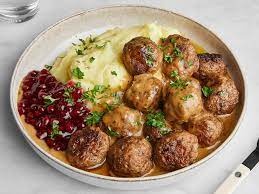

Swedish Meatballs

Description
The Swedish speciallity. A simple dish that you can find in IKEA.
Ingredients
- Potatos
- Meatballs
- Brown sauce
- Lingonberry
Steps
- Boil the potato
- Prepare the meatballs in your frying pan (what ever that is called in English (it's not frying that is for sure))
- Mash the potato
- Serve with some lingonberry and brown sauce
- Enjoy!